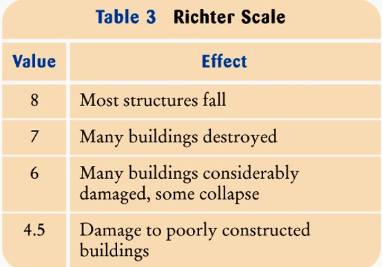

3.3 ESTRUCTURA ALTERNATIVA MÚLTIPLE
Estructura alternativa múltiple
Per començar amb l'estructura Alternativa múltiple, cal haver entès els continguts de l'estructura alternativa simple.Fins ara hem vist com avaluar una expressió i determinar una execució o una altre en funció de si es compleix la condició establerta. Però a vegades es poden donar diferents casos que necessitem avaluar diferents solucions. En aquests casos apareix l'estructura alternativa múltiple.
Declaració i funcionament
Tot i això, també apareix el altrament si, o
A continuació veurem un exemple de cada:
Condicionals niats
si(condició 1)
si (condició 1.1)
fer quelcom
altrament
fer quelcom
altrament
si(condició 2)
fer quelcom
altrament
si(condició 3)
si (condició 3.1)
fer quelcom
altrament
Continuació del codi després de l'estructuraAltrement si:
si(condició1)
fer quelcom
altrament si(condició 2)
fer quelcom 2
altrament si (condició 3)
fer quelcom 3
....
....
altrament
fer quelcom nSwitch
L'estructura té la següent forma:
unsigned int digit;
switch(digit){
case 0: cout<<"Numero 0"; break;
case 1: cout<<"Numero 1"; break;
case 2: cout<<"Numero 2"; break;
case 3: cout<<"Numero 3"; break;
default: cout<<"Numero major que 3"; break;
}És a dir, primer comprova si digit == 0, després digit == 1, i així successivament fins a trobar la condició correcta, aleshores executa el case corresponent, i tots els posteriors.
Si no troba la condició correcta, aleshores executarà la branca "
Altres exemples:
Exemple 1:
 Per veure la solució:
//Entrada: l'usuari entra un nombre real entre 0-10
//Sortida: mostra els efectes del terratrèmol.
#include <iostream>
using namespace std;
int main(){
double richter;
cout<<"Entra el nivell del terratremol,(0-10)"<<endl;
cin>>richter;
if (richter>=8.0)
cout<<"Most structures fall";
else if (richter>=7.0)
cout<<"Many buildings destroyed";
else if (richter>=6.0)
cout<<"Many buildings considerably damaged, some collapse";
else if (richter>=4.5)
cout<<"Damage to poorly constructed buildings";
else
cout<<"No destruction of buildings";
//Què passaria si es canviés l'ordre de les condicions?
return 0;
}